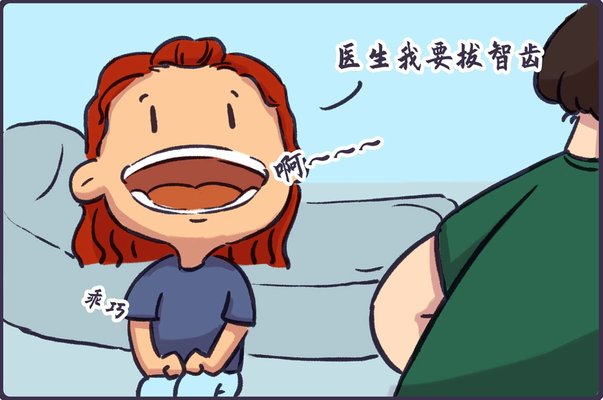
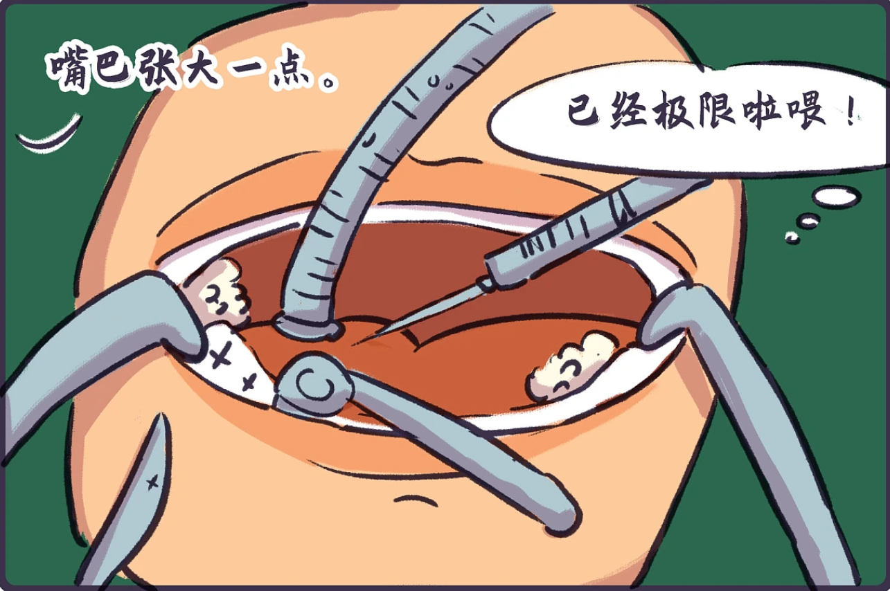
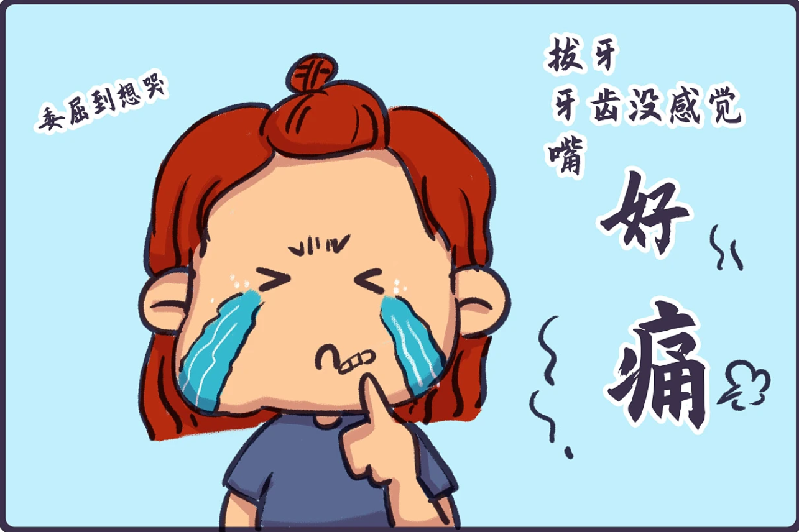

智齿拔除术后护理（Postoperative Care）
智齿拔除后要注意什么？(After your extraction, you should avoid...)
- 咬紧止血棉球，30分钟后再吐掉
- 避免剧烈活动 | intense exercise
- 避免憋气 | holding your breath
- 2小时内避免进食饮水 | having food or drinks for 2h
- 24小时内禁止刷牙漱口 | rinsing your mouth for 24h
- 24小时内不要吐口水，尽量往下咽 | spitting for 24h
- 24小时内避免使用吸管、吸烟等吮吸动作 | drinking through a straw and smoking for 24h
为避免干槽症，一定谨遵医嘱！

©雅弘_JUN